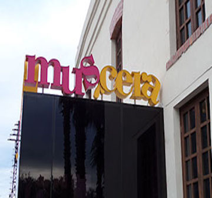
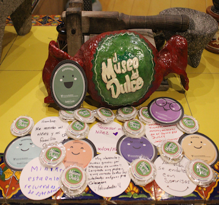

All experiences in a Positive Museum have a scientific foundation based on the science of Positive Psychology (Seligman, 2016) and the approach of Art as Therapy (De Botton & Armstrong, 2017).
Museums in Nuevo León
Different activities
More than 42 thousand visitors
Virtual tours
More than 5 thousand visitors